Contamos con gran variedad de cervezas
- DORADA PAMPEANA
- ENGLISH PALE ALE - EPA
- BELGIAN GOLDEN ALE
- GOLDEN ALE
- BITTER
- AMERICAN PALE ALE - APA
- WEIZEN
- DUNKEL WEIZEN
- SCOTTISH ALE
- RED ALE
- BELGIAN DUBBEL
- PORTER
- MILK STOUT
- CREAM ALE
- KOLSCH
- INDIAN PALE ALE - IPA
DORADA PAMPEANA
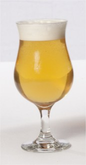La Dorada Pampeana es un estilo argentino de cerveza rubia de alta fermentación, bautizado por el reconocido cervecero artesanal, Marcelo Cerdán. El estilo está adaptado a las posibilidades de la Pampa Argentina.1 Generalmente se usa sólo malta pálida, aunque también se suele incorporar entre un 3-5 % de malta caramelo para darle un tono más dorado. Se utiliza lúpulo patagónico Cascade en la mayoría de los casos, y levaduras ale secas americanas. Posee un cuerpo liviano y un sutil amargor que balancea el dulzor de las maltas.
ENGLISH PALE ALE - EPA
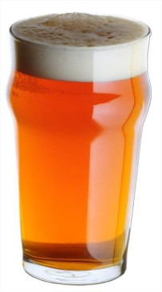De un ligero amarillo a un ligero cobre, con una claridad brillante. La espuma difiere entre un blanco moderado y un blanco pálido y puede escasear debido a la baja carbonatación.
Goza de un amargor entre medio y alto. La gran mayoría tambiÉn tienen niveles moderados de Ésteres, bajos o altos en función de la variedad. Los Ésteres son sabores afrutados que resultan de la combinación de ácidos orgánicos y los alcoholes, durante la fermentación.
BELGIAN GOLDEN ALE
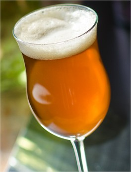Complejo, moderadamente especiado y con una abundante presencia de Ésteres afrutados. El alcohol y el lúpulo tienen una relevancia entre baja y moderada. Los Ésteres recuerdan frutas tales como las peras, las naranjas y las manzanas.
El color de las Belgian Golden Ale es entre amarillo y medio dorado. En general, son cristalinas y efervescentes.
GOLDEN ALE

Cuando hablamos de golden ale o blonde ale nos referimos a cervezas con una graduación alcohólica bastante ligera, nunca suele ser demasiado superior al 5%, y con un amargor muy moderado, inferior a los 30 IBUs.
BITTER
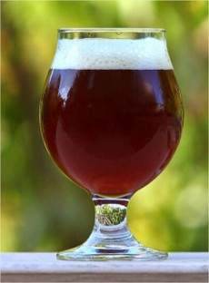La bitter es un tipo de cerveza inglesa, derivada originalmente de la pale ale. Una versión más fuerte de la misma se ha convertido en una popular cerveza en botella. El ingrediente principal es cebada malteada, agregándose lúpulo para mejorar las características, y para dar un olor y gusto distintivos.
AMERICAN PALE ALE - APA
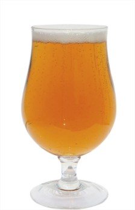American pale ale es un estilo de pale ale desarrollado en los Estados Unidos alrededor de 1980.La American Pale Ale generalmente se sitúa alrededor de 5% abv, y contienen cantidades significativas de lúpulos americanos, normalmente Cascade.
WEIZEN
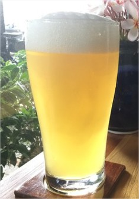La cerveza de trigo es una cerveza, generalmente de fermentación alta o ale, que se elabora con una gran proporción de trigo en relación con la cantidad de cebada malteada.
DUNKEL WEIZEN
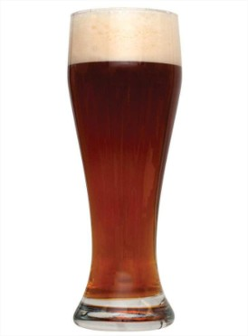Dunkel es una palabra utilizada para varios tipos de cerveza alemana lager oscura. Dunkel es la palabra alemana que significa «oscuro», y las cervezas dunkel generalmente varían en color de ámbar a marrón rojizo oscuro. Se caracterizan por su suave sabor a malta.
SCOTTISH ALE
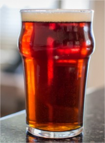La Scottish ale es el nombre por el que se define la cerveza elaborada en Escocia. Históricamente, en Escocia era imposible de cultivar lúpulo que estuviese mínimamente bien; la necesidad de importar lúpulo y el clima frío de Escocia produjo una cerveza en que la malta era predominante, con la fermentación de la levadura más limpia que la cerveza Inglesa.
Originalmente, el estilo de las cervezas escocesas estaba hecho con malta ligeramente marrón, mirto de los pantanos en lugar de lúpulo para la amargura. Después los elaboradores usaron más malta tostada y cebada sin maltear para el color. La cerveza escocesa moderna tiene menos amargura, y un sabor más dulce o tal vez afrutado debido al mayor uso de la malta. Algunas pueden tener un gusto ligeramente ahumado
RED ALE
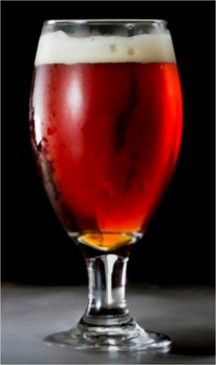La red ale, conocida también como Irish red ale, es un tipo de cerveza ale original de Irlanda. Su ligero color rojo es debido al tostado de la cebada además de la malta. Las cervezas normalmente son bajas en alcohol, aunque se elaboran versiones más potentes para su exportación.
BELGIAN DUBBEL
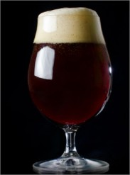Dubbel es la denominación de una cerveza trapista belga. El origen de la dubbel fue una cerveza producida en la abadía trapense de Westmalle en 1856. Desde el 10 de diciembre de 1836 dicha abadía ha producido una witbier que es bastante dulce y de baja graduación alcohólica para ser consumida por los padres.
PORTER
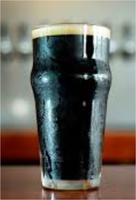Porter es un estilo de cerveza oscura desarrollado en Londres a partir de cebada malteada marrón. El nombre se registró por primera vez en el siglo XVIII, y se cree que proviene de su popularidad entre los porteadores de la calle y el río, que transportaban objetos para otros.
MILK STOUT
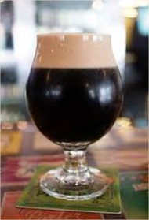Stout es el nombre de un estilo de cerveza, tipo ale, muy oscura, originario de las islas británicas.
CREAM ALE
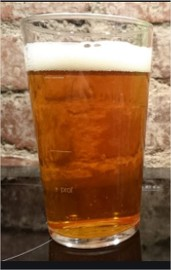Lo primero que hay que aclarar de las cervezas cream ale es que no tienen ningún ingrediente relacionado a los lácteos, más bien, el origen de su nombre se debe a su color, que tiene un tono claro o atenuado. Se trata de un estilo que podría pertenecer tanto a las familia de las ale, así como de las lager, ya que a pesar de estar fermentada a temperaturas propias de las ale, algunas veces estas cervezas utiliza levadura lager, o una mezcla de lager y ale para su fermentación.
KOLSCH
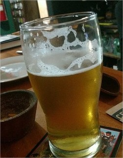La Kölsch es una especialidad local de cerveza elaborada en Colonia. Es una cerveza clara, su tonalidad es amarilla brillante y tiene un gusto prominente, pero no extremo de lúpulo. Comparada a la cerveza "estándar" alemana, Pils, es menos amarga.
INDIAN PALE ALE - IPA
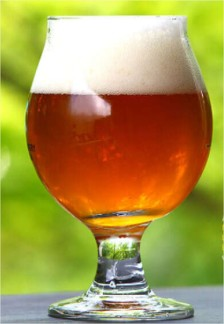La India pale ale es un estilo de cerveza de tradición inglesa que se caracteriza como una ale pálida y espumosa con un alto nivel de alcohol y de lúpulo